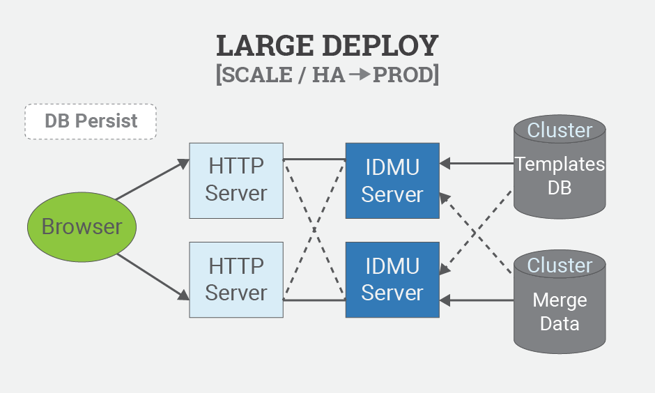
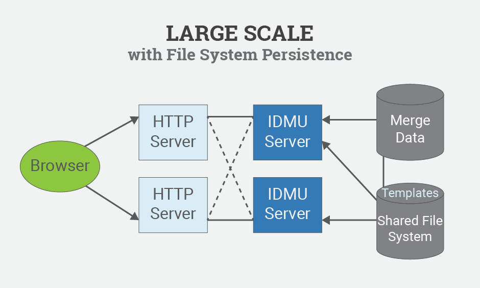
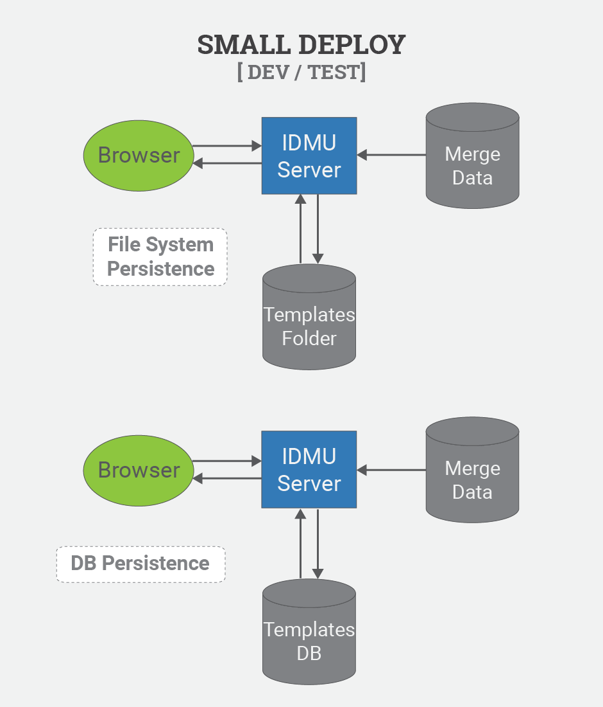

Copyright
2015, 2015 IBM
Licensed under the Apache License, Version 2.0 (the
"License"); you may not use this file except in compliance
with the License. You may obtain a copy of the License at http://www.apache.org/licenses/LICENSE-2.0.
Unless required by applicable law or agreed to in writing, software
distributed under the License is distributed on an "AS IS"
BASIS, WITHOUT WARRANTIES OR CONDITIONS OF ANY KIND, either express
or implied. See the License for the specific language governing
permissions and limitations under the License.
Current installation guides are maintained in the project GitHub
wiki.
https://github.com/FlatBallFlyer/IBM-Data-Merge-Utility/wiki
Specific deployment guides can be found at:
IDMU stores it's primary configuration data in the idmu.properties file. This file must be located in
$IDMU_ROOT/properties and contains the configuration options listed
below. Database connections and log4j logging are configured in two additional property files whose
location is specified in the idmu.properties file. By default the IDMU_ROOT is /opt/ibm/idmu, but you can set an
alternate location in one of the following ways before starting the application.
Set a j2ee context Parameter (For Tomcat, place the following value in your context.xml file)
<Parameter name="IDMU_ROOT" value="/usr/local/idmu" override="false" description="IDMU Root Folder"/>
or Specifying the environment variable parameter IDMU_ROOT. For Tomcat you can place this entry in the $CATALINA_HOME/bin/setenv.sh file
export JAVA_OPTS="-DIDMU_ROOT=/usr/local/idmu"
If you have changed IDMU_ROOT, after the initial install you will find the idmu folders in the location that you
specified. You will need to edit idmu.properties and log4j.properties files to update the default folder values to
match the new location. After updating these files you will need to re-initialize the system by either restarting the J2EE server
or issuing this call from the command line. curl -X POST localhost:8080/Initialize
This is the default directory structure created in IDMU_ROOT, you can specify alternate locations for these directories
but it is strongly recommended that you maintain this directory structure for ease of configuration, upgrades and portability.
- IDMU_ROOT
- database - SQL scripts for the Template and Testing Databases
- logs - Log file directory (configured in log4j.properties)
- output - The directory where merge output archives are placed see merge-output-root property
- packages - The directory where system template packages are placed during install
- properties - The location for the idmu.properties file as well as database pooling and logging properties files
- templates - The folder used for file system persistence of templates see merge-templates-folder property
The following configurations are available in the
idmu.properties file.
- merge-templates-folder Default:
/opt/ibm/idmu/templates – This parameter specifies the path to the
templates folder used by File System Persistence.
- merge-output-folder Default:
/opt/ibm/idmu/output – This parameter specifies the location where
merge archive output is written to.
- merge-package-folder Default:
/opt/ibm/idmu/package – This parameter specifies the location where
merge packages are loaded from.
- secure-server Default: no – This parameter
is used to disable the template save/delete rest services. This
limits the Template Editor functionality to a read-only tool for
viewing templates and secures the templates against any changes.
- jdbc-pools-properties Default:
/opt/ibm/idmu/properties/databasePools.properties – This parameter
is used to specify the location of the database connection
properties file.
- log4j-init-properties Default:
/opt/ibm/idmu/properties/log4j.properties – This parameter is used
to configure the path to a log4j properties file.
- db-persist Default: no – This parameter is
used to configure database persistence. The value “yes”
enables database persistence of templates.
- jdbc-persistence-templates-poolname
Default: idmuTemplates - The connection pool used by Template
Database persistence
- pretty-json Default: no – This parameter is
used to control “pretty” json formatting of the REST
service returns. A value of “yes” enables pretty json.
By default IDMU uses json files stored in the
merge-templates-folder to persiste templates. If you have a large
scale deployment or simply prefer a JDBC data source you can
configure JDBC database persistence of templates. This configuration
makes it much easier to support large scale and highly available
configurations. To configure Database Template persistence follow
these steps:
- Run the $IDMU_ROOT/database/IDMU.v3.[vendor]_TEMPLATE.sql
script for your platform to create the template database and load
the default template.
- Configure the TemplateDB data source in the
$IDMU_ROOT/database/databasePools.properties file. See the
properties file for examples.
- Configure the db-persist runtime property to to
“yes”
- Re-initilize the Rest Services: curl -X POST localhost:8080/Initialize
- Load the System Templates using one of the following methods
- From the IDMU Home Page using the Load Template Package
button(s)
- From a unix command line: curl --upload
$IDMU_ROOT/packages/system.json yourHost:port/idmu/templatePackage
To configure your database for use in merge processing, follow
these steps:
- Install your jdbc drivers in the J2EE path
- Configure your database connection information in the
$IDMU_ROOT/properties/databasePools.properties file.
See $IDMU_ROOT/properties/databasePools-example.properties for samples.
- Re-initilize the Rest Services: curl -X POST localhost:8080/Initialize
- You can now use the database pool name specified in the
configuration as the Source in your JDBC directives.
A special note on providing database pool properties. All database pool names must be identified
in the databasePools.properties file in the poolNames property. The connection values for each pool
(jndi, url, user, password and driver) can be provided in the properties file, or by a environment variable.
export JAVA_OPTS="-DtestgenDb.username=root -DtestgenDb.password=drowssap"
If present the environment variable values take presedence.
If you provide a jndi name, that value takes presedence over other configuration values. The following
jndi entry in the connectionPools.properties file jndi=java:/comp/env/jdbc/testgen will
connect to the database specified by this entry in the context.xml
During operation of the IDMU merge process archive output files
are written to $IDMU_ROOT/output. Proper use of the merge tool
will involve using the DELETE idmu/archive rest service to remove an
archive after it has been downloaded from the server. Even with this
processing it is a good idea to schedule a periodic cleaning of this
folder as well as the logs folder.
To properly call the merge tool from a command line interface follow these steps
- Make sure your top level template contains the {DragonFlyOutputFile} value so you know the archive name
- curl yourhost:port/idmu/merge/DragonFlyFullName=your.template.name > mergeoutput.txt
- get the Archive File name {DragonOutputFile} out of the mergeoutput.txt
- wget yourhost:port/pathToOutput/{DragonOutputFile}
- curl -X DELETE yourhost:port/idmu/archive/{DragonOutputFile}
To do this in one step, create the top level template to return the following script
Then you pipe the merge output to a bash shell curl host:port/idmu/merge?DragonFlyFullName=your.template > bash
In a typical IDMU production deployment you will want the
templates to be locked down to prevent unintentional or malicous
changes. The following steps will provide the most secure environment
for production configurations:
- Configure the secure-server runtime property to yes
- Re-initilize the Rest Services: curl -X POST yourHost:port/Initialize
Note that the secure rest services option does not block the
load packages rest service. This makes it convienent to copy new
template packages to the packages folder and use the IDMU Home Page -
Load Template Packages buttons to deploy new templates to a secure
server. This implies that you have proper security configured for the
packages folder.
If you want to disable even the load templates services, flag
*.json in the templates folder as read only, or grant read-only
access to the template database
The configuration item that is migrated between the development
and production environments is a Template Collection. You can use one
of the following techniquest to move templates between servers.
- Unix Command Line call the idmu/templatePackage rest servuces using curl.
NOTE: These services can not be used on a server with the secure-server parameter set to yes.
- To export a package from a development server: curl
devhost.com:port/idmu/templatePackage/collections >
myPackge.json
- To remove templates from the target server (if necessary) curl
-X DELETE prodhost.com:port/idmu/templatePackage/{collection}
- To import a package to a production server: curl
--upload myPackage.json prodhost.com:port/idmu/templatePackage
- Web UI When your production server is "secured" you can export the package as shown above,
and copy the resulting file to the target servers $IDMU_ROOT/packages folder. You can then use the
Load Template Package button located at the bottom of the IDMU home page to deploy those templates.
- File System Persistence You can simply copy the json files from $IDMU_ROOT/templates folder on the
source server to the same folder on the target server. Make sure to reset the template cache after copying
the files. This can be acomplished with curl host:port/idmu/merge&DragonFlyCacheReset
- Database Persistence You can simply copy the Template and Directive tables for the desired
template collections from one database to another. Make sure to reset the template cache after copying
the files. This can be acomplished with curl host:port/idmu/merge&DragonFlyCacheReset
Backup and Restoration of the $IDMU_ROOT folder on the server
is all that is needed. If using database persistence standard
database backup procedures will suffice. All templates are cached on
the merge server, so after restoring backups you may need to issue a
re-initilize or cache reset command
- curl -X POST yourHost:port/Initialize
- curl yourHost:port/idmu/merge?DragonFlyCacheReset
Enterprise scale customers will want to deploy IDMU based on
two clear use cases. The primary product use case is consumers
accessing merge output through the idmu/merge rest api. In the
production environment the templates are typically static
configuration items that are subject to change control processes. The
secondary use case is that of the developer who creates and tests the
templates to ensure they are producing the desired output. A typical
development deployment will be a single server deployment with data
source connections to test data. The template editor will be the
primary user interface for this server, allowing template developers
to create and test templates.
A typical production environment will implement a J2EE 3-tier
architecture to meet scale and availability requirements. In
addition, production environments typically secure the server to
prevent any changes to the Templates.
Large Deploy

Large Scale

Small Deploy
